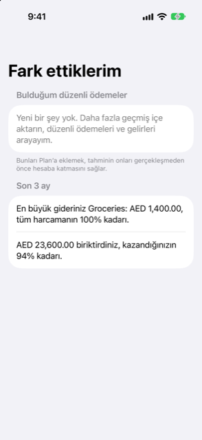

Kılavuz › Özet
Fark ettiklerim
Damla'nın geçmişinizde bulduğu örüntüler.
Fark ettiklerim, Damla'nın geçmişinizde bulduğu örüntüleri bildirdiği Özet sayfasıdır: tekrar eden ödemeler ve gelirler, ve son üç ayın nasıl geçtiği. Tek bir dokunuşla, her birini elle yazmak yerine, hâlihazırda yaptıklarınızı yinelenen kayıtlara dönüştürebilirsiniz.

Ne zaman kullanılır
- Bir süredir kayıt tutuyorsunuz ve Damla'nın henüz girmediğiniz düzenli ödemeleri bulmasını istiyorsunuz.
- Geçmişinizde bir şey tekrar tekrar ortaya çıkıyor — bir abonelik, bir ücret, bir maaş — ve tahminin olay gerçekleşmeden önce onu saymasını istiyorsunuz.
- Son üç ayın kısa bir özetini istiyorsunuz: en büyük maliyetiniz ve kazandığınızdan fazla harcayıp harcamadığınız.
Adım adım
- Özet sekmesini açın ve Fark ettiklerim'e dokunun.
- Bulduğum düzenli ödemeler bölümünü okuyun. Her satır alacaklıyı adlandırır; altında Damla'nın onu Gelir mi yoksa Fatura mı olarak okuduğunu söyleyen bir satır, ne sıklıkta tekrarladığı ve kaç kez görüldüğü yer alır.
- Her satırın sağındaki tutara bakın. Tek bir rakam ya da tutar her seferinde değiştiğinde bir aralıktır.
- Tanıdığınız satırda Ekle'ye dokunun. Kayıt, yinelenen öğelerinize eklenir ve o andan itibaren tahmin, olay gerçekleşmeden önce onu sayar.
Bölüm şu satırla biter: "Bunları Plan'a eklemek, tahminin olay gerçekleşmeden önce onları saymasını sağlar."
Bildirilecek bir şey olmadığında sayfa bunu söyler: "Yeni bir şey yok. Daha fazla geçmiş aktarın, ben düzenli ödemeleri ve gelirleri arayayım." Düzenli satırlar, kaydettikçe ve daha fazla aktardıkça görünür.
Son üç ay
Listenin altında, Son 3 ay başlıklı bir bölüm, kitaplarınızın bu dilimini özetler. En büyük maliyetinizi adlandırır, toplamını ve tüm harcama içindeki payını yüzde olarak verir. Ardından iki satırdan birini ekler: ya kazandığınızdan fazla harcadığınızı, farkıyla birlikte, ya da — o dönemde bir şey kazandıysanız — biriktirdiğinizi ve kazandığınızın kaçta kaçının bu olduğunu.
Bu bölüm, harcamanızın en az bir kategorisi olduğu anda görünür. Bütün üç ayı okur — evvelsi ayın başından bugüne, yalnızca bu ayı değil — böylece sıra dışı bir hafta tabloyu çarpıtmaz.
Bilmenizde fayda var
- Hiçbir şey kendi kendine eklenmez. Bir örüntü, yalnızca Ekle'ye dokunduğunuzda yinelenen bir kayıt olur. Her birini siz seçersiniz.
- Dokunmadığınız bir satır yeniden görünür. Bir örüntüyü gizleyen düğme yoktur; bu yüzden sayfayı bir sonraki açışınızda geri gelir.
- Bir örüntünün tekrar etmesi gerekir. Damla bir şeyi, onu en az üç kez, eşit aralıklarla — aylık, haftalık ya da 2 haftada bir — görmüşse ve sonuncusu hâlâ sürüyor gibi görünecek kadar yakınsa önerir. Gelir ve faturalar altında hâlihazırda bulunan bir şey yeniden önerilmez.
- Aralık, tahmin demektir. Tekrarlayan bir ödemenin tutarı değiştiğinde, Damla gördüğü yayılımı gösterir. Eklemeden önce kendi kayıtlarınızla karşılaştırın.
- Eklenen kayıtlar Plan'da yaşar. Bunları daha sonra Plan, Gelir ve faturalar altında, başka herhangi bir yinelenen kayıt gibi değiştirebilir ya da kaldırabilirsiniz.
- Özet, kitaplarınızı izler. İki bölüm de kaydettiklerinizden hesaplanır. Hareketler'de bir işlemi düzeltmek, bu sayfanın bildirdiklerini değiştirir.
- Bu sayfa, geçmişinizin gösterdiklerini rakamlar ve tahminlerle bildirir. Bilgi verir, finansal tavsiye değil.
İlgili
- Paranın gittiği yer
- Tekrar eden gelir ve faturalar
- Tahmin ve güvenle harcanabilir
- Eğilimler ve net değer
Anlaşılmayan ya da eksik bir şey mi var? support@raveniq.ai adresine yazın ve hangi sayfa olduğunu belirtin.